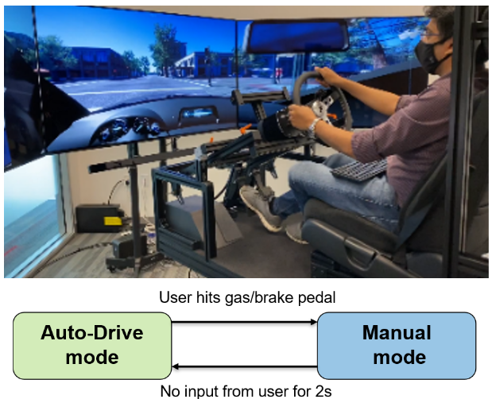
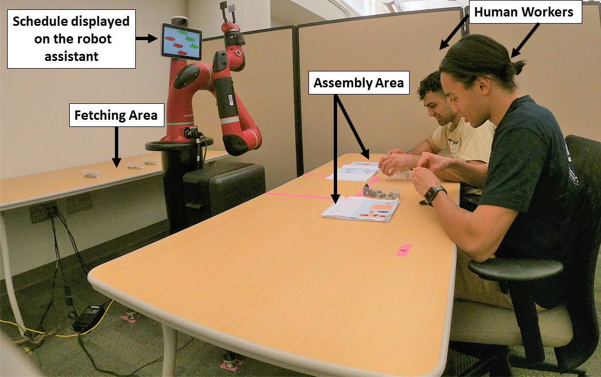

|
Manisha Natarajan I'm a Robotics PhD Student in the School of Interactive Computing at Georgia Tech. I work in the CORE Robotics Lab advised by Dr. Matthew Gombolay. Prior to starting my PhD, I completed my Masters in Electrical and Computer Engineering at Georgia Tech, and my Bachelors in Electrical and Electronics from M.S. Ramaiah Institute Technology, India. I am passionate about advancing the state-of-the-art in robotics and AI and creating intelligent and interactive systems that can assist, understand, and collaborate with humans across various domains and contexts. |
Research
My research interests lie at the intersection of Artificial Intelligence (AI) and Human-Robot Interaction (HRI),
with an emphasis on 1) developing models to improve the robots' understanding of humans, and 2) helping robots communicate
their objectives to improve human understanding. My research focuses on settings where both humans and robots
are suboptimal and explores how to leverage the strengths of humans and robots to optimize team performance.
|
|
|
Mixed-Initiative Human-Robot Teaming under Suboptimality with Online Bayesian Adaptation
Manisha Natarajan*, Chunyue Xue*, Sanne van Waveren, Karen Feigh, Matthew Gombolay AAMAS, 2024 arXiv / code We adopt an online Bayesian approach that enables a robot to infer people's willingness to comply with its assistance in a sequential decision-making game. |
|
|
Diffusion Models for Multi-target Adversarial Tracking
Sean Ye, Manisha Natarajan, Zixuan Wu, Matthew Gombolay IEEE MRS, 2023 arXiv We present CADENCE, a diffusion model aimed at generating comprehensive predictions of multiple adversary locations by leveraging past sparse state information. |
|
|
Adversarial Search and Tracking with Multi-Agent Reinforcement Learning in a Sparsely Observable Environment
Zixuan Wu*, Sean Ye*, Manisha Natarajan, Letian Chen, Rohan Paleja, Matthew Gombolay IEEE MRS, 2023 arXiv We propose a novel Multi-Agent Reinforcement Learning framework that leverages the estimated state location of an opponent from a filtering pipeline to produce interdiction paths for a team of tracking agents in pursuit-evasion domains. |

|
Human-Robot Teaming: Grand Challenges
Manisha Natarajan*, Esmaeil Seraj*, Batuhan Altundas*, Rohan Paleja*, Sean Ye*, Letian Chen*, Reed Jensen, Kimberly Chestnut Chang, Matthew Gombolay Current Robotics Reports, 2023 We review the field of Human-Robot teaming (HRT) and identify key challenges to guide the research community towards successful HRT while avoiding potential pitfalls. |
|
|
Learning Models of Adversarial Agent Behavior under Partial Observability
Sean Ye*, Manisha Natarajan*, Zixuan Wu*, Rohan Paleja, Letian Chen, Matthew Gombolay IROS, 2023 arXiv / code / video We present a novel architecture that uses Graph Neural Networks with a Mutual Information formalism to predict the current and future states of an adversarial opponent in large-scale pursuit-evasion domains. |
|
|
Concerning Trends in Likert Scale Usage in Human-Robot Interaction:
Towards Improving Best Practices
Mariah Schrum, Muyleng Ghuy, Erin Hedlund-Botti, Manisha Natarajan, Michael Johnson, Matthew Gombolay ACM Transactions on Human-Robot Interaction (THRI), 2023 We report the incorrect statistical practices in the field of HRI (for papers published through 2016 - 2020) and conducted a survey of best practices across several venues to provide a comparative analysis on how Likert practices differ across the field of HRI. |
|
|
Impacts of Robot Learning on User Attitude and Behavior
Nina Moorman, Erin Hedlund-Botti, Mariah Schrum, Manisha Natarajan, Matthew Gombolay HRI, 2023 We examine how different learning methods (e.g., reinforcement learning, learning from demonstrations, interactive learning) influence the users perceptions of an in-home assistive robot. |
|

|
Towards Adaptive Driving Styles for Automated Driving with Users'
Trust and Preferences
Manisha Natarajan, Kumar Akash, Teruhisa Misu HRI - Late Breaking Report, 2022 video We explore different methods to adapt the driving style of an autonomous vehicle to match the preferred driving styles of users and improve their trust in the vehicle. |
|
|
Negative Result for Learning from Demonstration: Challenges
for End-Users Teaching Robots with Task and Motion Planning Abstractions
Nakul Gopalan, Nina Moorman, Manisha Natarajan, Matthew Gombolay RSS, 2022 We conduct two novel human-subjects experiments to determine what instructional information is required to support uses with non-robotics experience to learn to program robots effectively to solve novel tasks via demonstrations. |
|

|
Coordinating Human-Robot Teams with Dynamic and Stochastic Task Proficiencies
Ruisen Liu*, Manisha Natarajan*, Matthew Gombolay ACM Transactions on Human-Robot Interaction (THRI), 2023 video We introduce a novel resource coordination algorithm that enables robots to schedule team activities by predicting the task performance of their human teammates while ensuring that the schedule is robust to temporal constraints. |
|
|
Effects of Anthropomorphism and Accountability on Trust in Human-Robot Interaction
Manisha Natarajan, Matthew Gombolay HRI, 2020 video We conducted a human-subjects experiment to examine how people's trust and dependence on robot teammates providing decision support varies as a function of different attributes of the robot, such as perceived anthropomorphism, type of support provided by the robot, and its physical presence. |
Previous Internships |
Teaching Experience |

{kind=link}
|
Thanks to Jon Barron for the website template [Source code].
Icons taken from flaticon.com
|